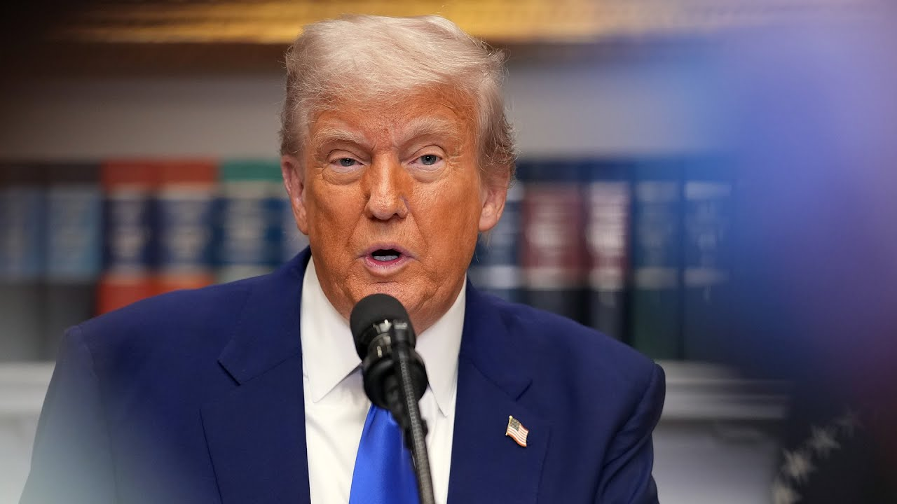

【穆迪将美国信用评级下调至AA1，这意味着什么？】
Summary: The discussion debates whether Moody's downgrade of the US credit rating was justified, questioning its timing and assumptions about economic growth, revenue, and spending.
摘要： 讨论围绕穆迪下调美国信用评级的合理性展开，质疑其时机以及对经济增长、收入和支出的假设。

⏱️ Estimated Reading Time: 14 min
Was this deserved?
这是应得的吗？
Are you going to tell me Moody's is making a political move?
你是要告诉我穆迪在搞政治操作吗？
It was deserved.
这是应得的。
Well, I mean.
嗯，我是说。
Well, actually, I didn't want to say that, but.
好吧，其实我不想这么说，但。
But you said it.
但你已经说了。
And the timing is just very strange.
而且时机非常奇怪。
Look, the bill is working itself through the Congress.
看，法案正在国会推进。
We have to see what it looks like.
我们得看看它最终是什么样子。
The CBO is estimates of of how they score.
国会预算办公室的评分估计。
Have real problems with, for example, they're assuming GDP in less than 2%.
存在严重问题，比如他们假设GDP增速低于2%。
I don't know what Moody's Moody's is assuming, but you have 100% debt to GDP.
我不知道穆迪的假设是什么，但债务与GDP之比已达100%。
As Secretary Bessen has mentioned.
正如贝森部长提到的。
That is not unusual in the world or an especially coming after a period of very low rates.
这在全球并不罕见，尤其是在一段极低利率时期之后。
You had negative rates and zero rates for much of the industrialized world.
许多工业化国家曾有过负利率和零利率。
So here you are, you're downgrading the country that has the reserve currency.
所以你现在下调的是拥有储备货币国家的评级。
You're downgrading a country that's growing the fastest of any industrialized countries, and you're also downgrading the country that has the best productivity per capita of any country.
你下调的是工业化国家中增长最快的国家，也是人均生产率最高的国家。
So to do this, I'm completely nonplussed by it.
这么做让我完全无法理解。
It doesn't make any sense to do it on a Friday before even seeing a bill, which I think will actually potentially I'm an optimist to do some good stuff on the spending and certainly raise revenues.
在周五、甚至还没看到法案之前就这么做毫无意义，我认为法案可能会在支出方面做些好事，并增加收入。
I mean, I just don't understand how you know, and I'm guessing this is behind Moody's analysis.
我只是不明白，我猜这是穆迪分析的依据。
I don't know because I've not seen it yet.
我不知道，因为我还没看到。
But I mean, when you assume that an expiring of a tax package that's been in place for seven and a half years is somehow going to add to the deficit, that just doesn't make it.
但如果你假设一个实施了七年半的税收方案到期会增加赤字，这根本说不通。
That's fundamentally wrong, in my opinion.
在我看来，这从根本上就是错的。
Just very poor forecasting.
只是非常糟糕的预测。
See, I have a big problem with what? Moody's dead.
看，我对什么有很大问题？穆迪的做法。
Well, I'll give you some of Moody's reasoning, Joe.
好吧，乔，我来告诉你穆迪的一些理由。
And I'm reading here directly from the statement, they say over the next decade, we expect larger deficits as entitlement spending rises while government revenue remains broadly flat.
我直接读一下声明，他们说未来十年，随着福利支出增加而政府收入基本持平，我们预计赤字会更大。
They say in turn, that leads to large fiscal deficits, driving the debt and interest burden higher.
他们说，这反过来会导致巨额财政赤字，推高债务和利息负担。
What part of that thinking do they have wrong here?
他们的这种想法哪里错了？
Is it the revenue side or entitlement spending going up?
是收入方面还是福利支出增加？
Because that certainly victory.
因为这确实是个问题。
Though the trajectory of the wall.
尽管趋势如此。
If you look at the CBO scoring, it's actually beyond the next ten years where Medicare or Medicaid are driving it, actually more so than Social Security.
如果你看国会预算办公室的评分，实际上是十年后医保或医疗补助在推动，甚至超过社保。
But that's way, way far out.
但那还很遥远。
I mean, the revenue share of GDP has been above its historical average.
我是说，收入占GDP的比例一直高于历史平均水平。
We've recently had a a really excessive spending, and we have to see actually what that spending looks like.
我们最近确实支出过多，得看看实际支出情况。
We're working with the Congress.
我们正在与国会合作。
Congress is working, rather, to pass a budget.
国会正在努力通过预算。
So we don't know what the spending is going to look like.
所以我们还不知道支出会是什么样。
I mean, this isn't we knew this was going to happen, Kelly, that the long term trends, by some estimates, look poor.
我是说，凯莉，我们早知道长期趋势看起来不好。
This isn't new news.
这不是新闻。
So why would you do it now without even knowing what the budget looks like?
那你为什么在还不知道预算的情况下现在就下调？
And by the way, ten year yields were recently under 4% and they've risen up into the 445, 450 range because we've taken recession risk off and the U.S. economy looks healthy.
顺便说，十年期收益率最近低于4%，现在涨到了4.45%-4.5%，因为我们消除了衰退风险，美国经济看起来很健康。
So I don't know.
所以我不知道。
And term premium, by the way, which is higher, is still lower than where it was in January.
而且期限溢价虽然更高，但仍低于1月份的水平。
So, again, without going into all the details about that, Moody's came up with their assumptions today.
所以，再次强调，不深入细节，穆迪今天提出了他们的假设。
I don't agree with you.
我不同意你。
Don't think I don't agree with them.
别以为我不同意他们。
Well, it's really interesting here when when when they point to $4 trillion being added to the federal deficit over the next decade.
好吧，有趣的是他们指出未来十年联邦赤字将增加4万亿美元。
Joe, are you taking issue with the reasoning or the timing here because Moody's hasn't seen the bill yet?
乔，你是质疑他们的理由还是时机，因为穆迪还没看到法案？
No, The reason I'm assuming they're they're using CBO analysis.
不，我猜他们用的是国会预算办公室的分析。
So, for example, CBO assumes 1.8% growth the next ten years.
比如，国会预算办公室假设未来十年增长1.8%。
That is ridiculously low.
这低得离谱。
It's a point or more or less than what Trump had during his first three years.
比特朗普前三年还低一个百分点左右。
It's even a lot weaker than where President Biden was the last few years.
甚至比拜登总统过去几年还弱很多。
The difference between 1.8% growth and two 4 to 5, I think we could be a three.
1.8%和2.4%-2.5%的差距，我认为可能是3%。
But whatever, if it's if it's mid-course, the revenue difference on that alone is worth 2 trillion.
但无论如何，如果是中间值，仅收入差异就值2万亿美元。
If it's a 3% economy, which I think we can get back to, that's 4 trillion of differential revenues between what the CBO is forecasting and what we would get based on just the growth.
如果是3%的经济增速，我认为我们可以回到这个水平，仅增长差异就会带来4万亿美元的收入差距。
And that's keeping the revenue share is the same.
这还是保持收入占比不变的情况下。
So I have a real problem with those assumptions.
所以我对这些假设有很大问题。
They're economically doom and gloom, and I don't agree with it.
他们对经济过于悲观，我不同意。
Well, when we consider, though, the wider economic context with which Moody's is doing this, yes, there are negotiations happening on Capitol Hill, Joe, but there's also negotiations happening with a number of countries trying to set new rates of tariffs that, according to the administration, are going to be at least 10% as a baseline, is going to be very hard to get below that.
好吧，但考虑到穆迪这么做的更广泛经济背景，乔，国会山确实在谈判，但也在与其他国家谈判设定新关税，据政府称，基准至少10%，很难低于这个水平。
And that brings us to the highest level we have seen in decades.
这将是几十年来最高水平。
Does that not have some bearing when we consider the fiscal health of the United States, the potential inflationary growth impacts that, well, you were doing almost with you all the way, Kelly, on that is certainly on the revenue side.
考虑到美国的财政健康和潜在通胀增长影响，这难道没有关系吗？凯莉，我几乎完全同意你，这确实在收入方面。
I mean, we're on track to run $200 billion of tariff revenue this year at the current run rate.
我是说，按目前速度，今年关税收入将达到2000亿美元。
That's a lot of money.
这是很多钱。
It has yet to show up at all in the inflation data.
但通胀数据中还没体现出来。
Amazingly, the inflation data have under undershot expectations.
令人惊讶的是，通胀数据低于预期。
The problem is when CBO does its analysis because it assume as part of law it's got to be legislated.
问题是国会预算办公室做分析时假设必须立法。
Those tariff numbers aren't even part of it.
这些关税数字甚至不在其中。
So let's say it's only 100 billion.
假设只有1000亿美元。
Let's say it's the bottom end.
假设是最低水平。
And that's super pessimistic that over ten years that's another trillion dollars.
超级悲观的话，十年就是另外1万亿美元。
I have to believe that when the budget comes out, there's going to be some slowdown in spending where you could save $1,000,000,000,000 over a ten year period because it's $100 billion times ten gives you 2 trillion.
我相信预算出来后支出会放缓，十年可以节省1万亿美元，因为1000亿乘以10是2万亿。
So the tariff revenues aren't going to be part of the scoring and they should, given how much revenues we're already raising.
所以关税收入不会计入评分，但它们应该计入，因为我们已经增加了这么多收入。
Does this not strengthen the hand of members of the Freedom Caucus, though, who have expressed concern about rising debt and deficits?
这难道不会加强自由党团成员的手腕吗？他们一直对债务和赤字上升表示担忧。
They just got an interesting bit of company in this argument, Joe.
乔，他们在这个论点中得到了有趣的支持。
Well, certainly that certainly the fiscal hawks will use this as a reason to be more careful on the outlook and as it relates to the spending.
当然，财政鹰派会以此为理由更加谨慎看待前景和支出。
I'm all for yes, we need to slow the pace of spending, by the way, when we talk about spending cuts.
我完全赞成，我们需要放缓支出速度，顺便说，当我们谈论削减支出时。
Mike, as you know, these are never cuts.
迈克，你知道，这些从来不是真正的削减。
They're only cuts from just another Joe.
只是从另一个乔那里削减。
Joe, it's just us to get us talking here.
乔，这只是让我们讨论起来。
If we go from 6% nominal spending, let's say, to five, that's a 1% spending cut.
如果我们从名义支出6%降到5%，那就是削减1%。
So I certainly think we desperately need to slow the pace of spending.
所以我当然认为我们迫切需要放缓支出速度。
But again, because a lot of those deficit projections long term are on the revenue side, they're assuming way too pessimistic growth.
但同样，因为很多长期赤字预测在收入方面，他们假设的增长过于悲观。
They're assuming that if we have massive tax increases next year, the largest ever, that's going to raise revenue and won't work that way.
他们假设如果我们明年大幅增税，史上最大幅度，会增加收入，但不会这样。
But certainly on the spending side, there's room to cut, no question or slow the spending anyway.
但在支出方面，肯定有削减或放缓的空间。
Well, Joe, when we consider that part of what Moody's here is talking about is the interest burden, I do wonder if you expect, given what we've already heard from President Trump, about how he feels about where current interest rates are.
好吧，乔，考虑到穆迪提到的利息负担部分，我想知道你是否预计，鉴于我们已经听到特朗普总统对当前利率的看法。
If you would expect knowing the president as you do, having worked in his administration, for him to be pushing for the actual rate set by the Federal Reserve to be lower also in the name of the long term fiscal health of the United States, would you be surprised if he steps in with that argument?
根据你对总统的了解，曾在他的政府工作，你是否预计他会以美国长期财政健康为由推动美联储降低实际利率？如果他提出这个论点，你会惊讶吗？
Maybe.
也许。
But here's what I want to say, though.
但我想说的是。
If you look at the curve, the yield curve is, you know, it was still very flat.
如果你看曲线，收益率曲线仍然非常平坦。
And recently the two year note was above the Fed funds rate.
最近两年期票据利率高于联邦基金利率。
So you have a situation where the curve is flat, so the interest costs are significantly high.
所以曲线平坦，利息成本非常高。
If we have lower rates and the curve normalizes and the fund's rate is around to 52 to 75, which is where I think neutral is, those interest costs are all certainly going to look a lot lower.
如果利率降低，曲线正常化，基金利率在2.52%-2.75%，我认为这是中性水平，利息成本肯定会低很多。
And by the by Jay Powell own inflation metric, his super core, which is the services economy, excluding energy and housing, it's 50% of inflation, has no impact or any impact.
而且根据鲍威尔自己的通胀指标，超级核心通胀（服务业经济，不包括能源和住房，占通胀的50%）没有影响。
Tariffs have no impact on that.
关税对此没有影响。
That right now suggests monetary policy is as tight as it's been before the Fed started cutting rate.
这表明货币政策与美联储开始降息前一样紧缩。
So there's a very powerful argument right now based on real rates that the Fed could and should be cutting.
所以基于实际利率，现在有强有力的理由认为美联储可以而且应该降息。
And as that curve normalizes and those short rates fall, interest costs is going to come down a lot.
随着曲线正常化和短期利率下降，利息成本会大幅下降。
I doubt that that's a moody's estimates either.
我怀疑穆迪的估计也没考虑这点。